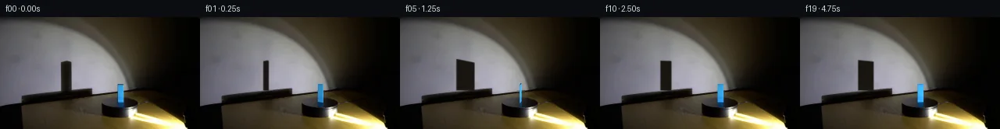

![首帧]()

Round 00
2026-11-05T03:34:23.493085+00:00像素候选变化代码 +343/−0inspection 更新
pixels ad5df2955b05ae7d · code a60c6746553044b7
查看本轮 generate.py 真实 diff
--- previous/generate.py
+++ current/generate.py
@@ -0,0 +1,343 @@
+"""PixelWorld continuation using photographic plates and analytic pixel geometry.
+No external assets, model inference, engine, or rendered-image viewing is used.
+"""
+from pathlib import Path
+import json
+import math
+import numpy as np
+from PIL import Image, ImageDraw
+from scipy.ndimage import gaussian_filter, map_coordinates
+from scipy.spatial import ConvexHull
+from scipy.special import ndtr
+from scipy.optimize import least_squares
+from artifact_io import save
+
+ROOT = Path(__file__).resolve().parent
+W, H, SS = 256, 144, 6
+FIRST = np.asarray(Image.open(ROOT / 'first_frame.png').convert('RGB'), dtype=np.uint8)
+PHOTO = FIRST.astype(np.float64)
+Y, X = np.mgrid[:H, :W]
+# World axes: X right, Y toward rear wall, Z up. R(theta) is clockwise
+# when looking downward onto the platform from +Z.
+CAM = np.array([[32., 6.4, 0.], [1., -10., -31.7]])
+ORIGIN = np.array([154.3, 115.9])
+BASE_Z = (115.9 - 109.35) / 31.7
+WIDTH, DEPTH, HEIGHT = .230, .020, .728
+WALL_Y = 1.35
+LIGHT = np.array([3.771153846153846, -1.35/.65, .26])
+VIEW = np.array([.2, -1., 326.4 / 1014.4])
+PLATFORM_CENTER = np.array([153.1, 109.8])
+PLATFORM_RX, PLATFORM_RY = 22.4, 6.3
+
+
+def rotation(deg):
+ a = np.deg2rad(deg)
+ c, s = np.cos(a), np.sin(a)
+ return np.array([[c,s,0.],[-s,c,0.],[0.,0.,1.]])
+
+
+def project(v):
+ return np.asarray(v) @ CAM.T + ORIGIN
+
+
+def vertices(deg):
+ a, b = WIDTH/2, DEPTH/2
+ local = np.array([[-a,-b,0.],[a,-b,0.],[a,b,0.],[-a,b,0.],
+ [-a,-b,HEIGHT],[a,-b,HEIGHT],[a,b,HEIGHT],[-a,b,HEIGHT]])
+ return local @ rotation(deg).T + np.array([0.,0.,BASE_Z])
+
+
+def shadow_polygon(deg):
+ v = vertices(deg)
+ lam = (WALL_Y-LIGHT[1]) / (v[:,1]-LIGHT[1])
+ q = LIGHT + lam[:,None] * (v-LIGHT)
+ xy = project(q)
+ return xy[ConvexHull(xy).vertices], xy
+
+
+def polygon_mask(xy, size=(W,H), ss=SS):
+ out = Image.new('L', (size[0]*ss, size[1]*ss), 0)
+ # Pixel centers are n+1/2 throughout the analytic geometry.
+ ImageDraw.Draw(out).polygon([tuple(p*ss) for p in xy], fill=255)
+ return np.asarray(out, dtype=np.float64) / 255.
+
+
+def make_clean_plate():
+ plate = PHOTO.copy()
+ # Row-wise interpolation respects the wall/table/turntable boundaries.
+ # Anchor closer to the hole on the wall, and robustly average on the disk.
+ for row in range(85,117):
+ if row <= 93:
+ left = PHOTO[row,148:150].mean(0)
+ right = PHOTO[row,159:161].mean(0)
+ lx, rx = 148.5, 159.5
+ else:
+ left = PHOTO[row,145:149].mean(0)
+ right = PHOTO[row,160:164].mean(0)
+ lx, rx = 146.5, 161.5
+ for col in range(149,160):
+ f = (col-lx)/(rx-lx)
+ plate[row,col] = left*(1-f) + right*f
+ # Original wall light estimated from nearby unshadowed pixels.
+ wall = PHOTO.copy()
+ sample_x = np.r_[np.arange(64,77), np.arange(94,107)]
+ for row in range(54,92):
+ coeff = np.polyfit(sample_x, PHOTO[row,sample_x], 2)
+ for c in range(3):
+ wall[row,70:101,c] = np.polyval(coeff[:,c], np.arange(70,101))
… diff truncated; 256 more lines …